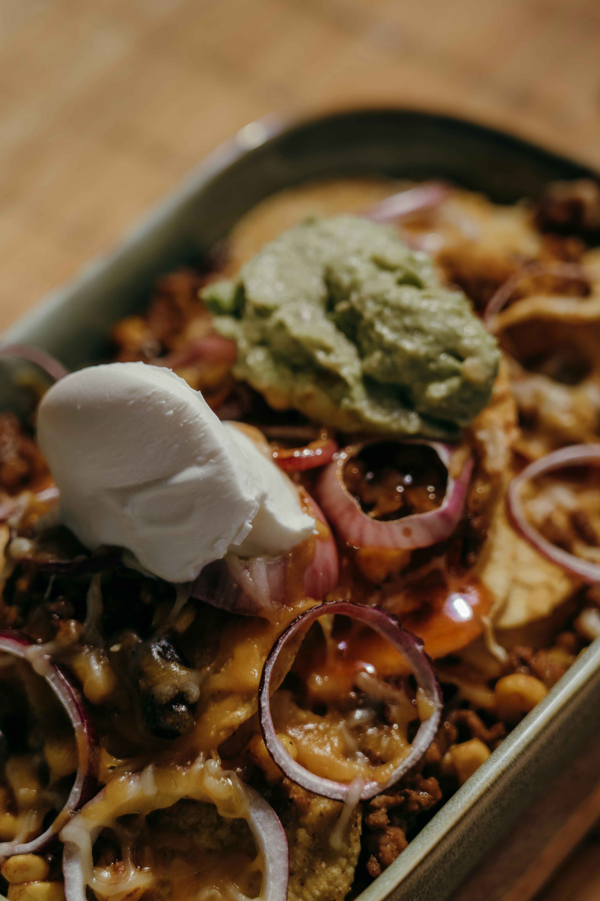

Taco Casserole
Home

Description
This easy to make meal is very tasty and takes no time to make.
You can serve this dish with chips, salsa, and green salad, making it the perfect dinner!
Ingredients
- 1 pound ground beef
- 1 can chili beans
- 3 cups tortilla chips, crushed
- 2 cups salsa
- 2 cups sour cream
- 1 can sliced black olives
- 1/2 cup chopped green onion
- 1/2 chopped fresh tomato
- 2 cups shredded Cheddar cheese
Steps
- Gather all ingredients.
- Preheat the oven to 350 degrees F. Spray a baking dish with cooking spray.
- Heat a large skillet over medium-high. Cook and stir the ground beef until browned and crumbly, 8-10 minutes.
- Stir in salsa, reduce heat, and simmer until liquid is absorbed, about 20 minutes. Stir in beans; cook until heated through.
- Spread the crushed tortilla chips over the bottom of the baking dish. Place beef mixture on top. Spread sour cream over the beef, then sprinkle olives, green onions, and tomatoes on top. Cover with Cheddar cheese.
- Bake in the preheated oven until hot and bubbly for 30 minutes.
- Serve and enjoy!